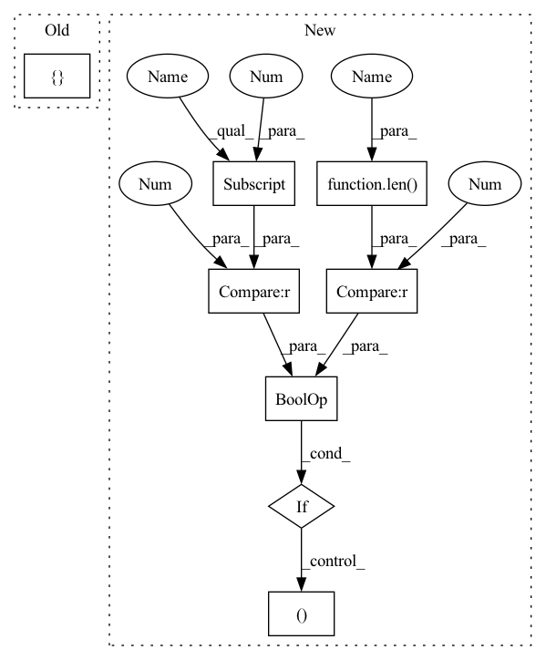

Pattern ID :2335

Before Change
class CNNUnpairedLayer(nn.Module):
def __init__(self, n_in, num_filters_2d=(), filter_size_2d=(), dropout_rate=0.0):
super(CNNUnpairedLayer, self).__init__()
conv = []
for n_out, f_sz in zip(num_filters_2d, filter_size_2d):
conv += [
nn.Conv1d(n_in, n_out, f_sz, padding=f_sz//2),
nn.GroupNorm(1, n_out),
After Change
super(CNNUnpairedLayer, self).__init__()
self.context = context
self.mix_base = mix_base
if len(layers)>0 and layers[0]==0:
layers = ()
n = n_in
n += n_in_base*mix_base
In pattern: SUPERPATTERN
Frequency: 6
Non-data size: 8
Instances
Fragment ID: 5480055
Project Name: keio-bioinformatics/mxfold2
Commit Name: 68ef608a1f3045fae21ae3f7f0d12858b14bacbf
Time: 2019-12-01
Author: satoken@bio.keio.ac.jp
File Name: dnnfold/fold/layers.py
Class Name: CNNUnpairedLayer
Method Name: __init__
Parent Class: nn.Module
Fragment ID: 5480059
Project Name: keio-bioinformatics/mxfold2
Commit Name: 68ef608a1f3045fae21ae3f7f0d12858b14bacbf
Time: 2019-12-01
Author: satoken@bio.keio.ac.jp
File Name: dnnfold/fold/layers.py
Class Name: FCUnpairedLayer
Method Name: __init__
Parent Class: nn.Module
Fragment ID: 5480057
Project Name: mxfold/mxfold2
Commit Name: 68ef608a1f3045fae21ae3f7f0d12858b14bacbf
Time: 2019-12-01
Author: satoken@bio.keio.ac.jp
File Name: dnnfold/fold/layers.py
Class Name: FCPairedLayer
Method Name: __init__
Parent Class: nn.Module
Fragment ID: 5480056
Project Name: mxfold/mxfold2
Commit Name: 68ef608a1f3045fae21ae3f7f0d12858b14bacbf
Time: 2019-12-01
Author: satoken@bio.keio.ac.jp
File Name: dnnfold/fold/layers.py
Class Name: CNNUnpairedLayer
Method Name: __init__
Parent Class: nn.Module